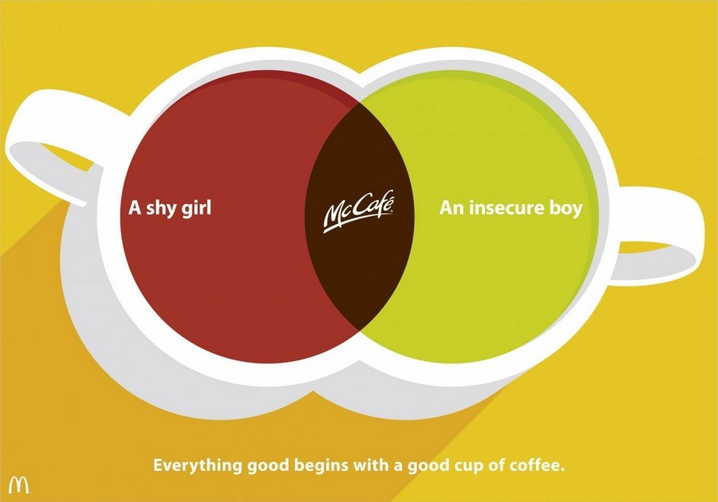

Что такое целевая аудитория
Целевая аудитория (ЦА) – это группа пользователей, на которую
направлены рекламные мероприятия. Она заинтересована в получении
услуги, продукта или информации, а в ней заинтересован
рекламодатель. Целевая аудитория – это все те, чьи потребности
удовлетворяет ваш продукт.
Представьте, что вы начали строить дом, прежде чем провели анализ
почвы. Так и с анализом ЦА.
Незнание своей ЦА приводит либо к полному провалу продукта на рынке,
либо, что чаще всего встречается в практике, значительное увеличение
бюджетов на продвижение.
Виды ЦА
-
В современной практике маркетинга выделяют следующие виды ЦА:
-
Основная и косвенная.
Основная принимает решение о покупке. Она инициатор действия, в отличие от косвенной. Естественно, что для нас она будет приоритетной. Например, основная аудитория детских игрушек – дети, а их мамы – это косвенная аудитория, хотя именно они проверяют качество игрушки и оплачивают ее.
-
Широкая и узкая ЦА.
Тут понятно из названия. Пример – любители чая – широкая аудитория, любители белого фруктового чая – узкая.
-
Аудитория от типа целевой группы.
ЦА в сфере бизнеса (B2B) и в сфере индивидуального потребления (B2C).
-
Аудитория по цели посещения сайта.
Две цели (покупка и поиск информации) — два вида действий посетителей вашего сайта. Это ЦА, заинтересованная в контенте сайта (посетители приходят за информацией), и посетители, которым интересны товары и услуги сайта для последующего приобретения.
Реклама справа явно рассчитана на более широкую аудиторию, чем левая.
Где копать? Добываем информацию
-
Получить данные о ЦА можно с помощью:
- анкетирования;
- интервьюирования;
- опросов.
Старайтесь опрашивать как можно больше респондентов или проведите опрос лидеров мнений. Ищите информацию на форумах, блогах, в социальных сетях (в группах или публичных страницах) смежной тематики.
Помните, что на форумах и в блогах есть «крикливое меньшинство». Их мнения нужно внимательно собирать и анализировать: они формируют имидж продукта. Следует учесть, что высказывания «этих людей могут и не совпадать с мнением «молчаливого большинства», приобретающего товар или услуги.
Социальные сети «Вконтакте», Facebook, Instagram – это плацдарм для проведения исследований и опросов, фокус-групп для вашего товара или услуги.
-
Преимущества:
- легко сегментировать аудиторию;
- большое количество ответов интервьюируемых;
- минимальные вложения средств;
- не требуется большое количество времени.
Добывая данные, всегда ищите причины и повод потребления товара. Необходимо точно представлять характер вашего потребителя.
Опрос о возможных поводах перекусить помог выделить Nestle такой сегмент ЦА как «депрессивные любительницы шоколада», которые предпочитают покупать конфеты в дорогих коробках. Новая стратегия продвижения конфет увеличила сбыт и снизила затраты на продвижение благодаря сужению аудитории.
Важно проводить интервью с так называемыми «инициаторами». Например, при покупке детской мебели, мужских брюк или рубашек, женщины также входят в целевую аудиторию, поскольку чаще именно они принимают решение о необходимости покупки.
Отличный пример рекламы «мужского» продукта для женской аудитории.
Портрет клиента: в чем польза
-
На основе портрета клиента вы можете:
-
Составить максимально «заточенные» под потребности определенной целевой аудитории маркетинговые кампании (рекламу, коммерческие предложения, контент и т.п.). Часто один и тот же продукт для нескольких категорий потенциальных клиентов нужно позиционировать по-разному.
Очень интересно наблюдать за тем, как крупные компании подстраиваются под разные сегменты своей ЦА. Вот, например, две подачи одной и той же услуги – завтрака. Первый явно ориентирован на более молодую аудиторию: рекламный посыл начинается со скрина из Twitter. Сама соцсеть востребована среди людей разных возрастов, но именно такие скрины-репосты сейчас на пике популярности среди молодой аудитории Instagram и других соцсетей.
Еще один пример от «Макдоналдс». Продукт один и тот же – гамбургер. Первый «сработает» на тех, кто следит за своим питанием или как минимум задумывается о том, что стоило бы похудеть / перейти на здоровую пищу. Вторая понравится ценителям театра. Эти аудитории могут пересекаться, но могут и не совпадать, поэтому лучше перестраховаться и охватить всех. Такой подход особенно хорошо работает в таргетированной рекламе.
-
Сформулировать грамотный оффер: узнать проблему клиентов и пообещать ее решение.
Комоды IKEA – это не только ценный мех, то есть, конечно, не только стильная и модная мебель, но и действительно функциональное приобретение. Маркетологи понимают реальную проблему клиента – нехватку места ¬ и апеллируют именно к ней.
-
Проработать выгоды потребителя, составить УТП.
реклама двух очень разных продуктов – лейкопластыря и машины – ориентированных на похожую аудиторию. В первом случае мы говорим только про выгоду: даже Флеш перестал бегать, потому что на рекламируемом автомобиле быстрее. Во второй отсылки сразу две. С одной стороны, пластырь делает тебя сильным, как Халк. С другой, даже Халк может быть уязвимым, и это нормально.
-
Определить триггеры для влияния и мотивации клиента.
В 2020 году самым мощным триггером для этой категории продуктов был коронавирус. Сегодня люди уже подрасслабились, поэтому можно напомнить и о других рычагах давления. Ситуации, к которым отсылают коллаж, любого могут свести с ума.
-
Выяснить основные каналы продвижения в интернете, например, с помощью индекса соответствия (о нем – далее).
Чем больше деталей в портрете, тем выше шанс создать предложение, максимально соответствующее потребностям вашей целевой аудитории.
Сегментируем целевой рынок с помощью 5W
What (что) – описание конкретных свойств товара/услуг;
Who (кто) – характеристика потенциального клиента;
Why (почему) – чем руководствуется потребитель при выборе товара или услуги;
When (когда) – время совершения покупки;
Where (где) – место продажи товара/услуг;
«Теремъ» предлагает дома «под ключ».
Сегментируем аудиторию:
-
Что?
- строительство дома под ключ;
- внутренняя и внешняя отделка дома;
- проведение системы водоснабжения;
- установка сантехники;
- установка отопительного оборудования;
- покрытие домов кровлей.
-
Кто?
- семья, мечтающая о собственном жилье;
- семья, желающая улучшить условия проживания;
- молодая семья, которая хочет жить отдельно от родителей;
- семья с детьми;
- семья, желающая переехать за город;
- семья работающих пенсионеров.
-
Почему?
- скорость строительства или оказания сопутствующих услуг;
- возможность сэкономить средства;
- возможность найти хороших строителей;
- возможность увидеть проектную документацию и предварительные расчеты;
- возможность получить услуги в комплексе (под ключ);
- возможность оценить выполненные работы (портфолио);
- наличие гарантии на работу;
- заключение договора-подряда.
-
Когда?
- услышал хорошие отзывы от друзей;
- в сезон скидок и акций;
- перед Новым годом, когда начал строить планы на будущее;
- перед рождением ребенка.
-
Где?
- сайт;
- страницы в социальных сетях;
- лендинги.
У вас должны появиться портреты реальных клиентов с определенными типами поведения при покупке услуг или товара. Их необязательно выдумывать, вспоминая своих знакомых. Как вариант, можно проанализировать соцсети, обратившись, например, к паблику ваших конкурентов.
Собранные вручную или автоматически данные о ЦА позволят определить верную стратегию продвижения.
Характеристики для описания целевой аудитории
-
Определение целевой аудитории может зависеть от следующих параметров:
- географические;
- демографические;
- социально-экономические;
- психографические;
- поведенческие.
Геолокация: ты с какого района, пацан?
Сведения о местонахождении позволяют показывать товар только жителям указанной местности. Также геолокация дает возможность предполагать потребности клиентов.
Например, в Новосибирске холодно, поэтому спрос на пуховики там будет явно выше, чем на доски для сёрфинга.
Ты чьих будешь, холоп? Демографические характеристики.
Демографические характеристики легко поддаются замерам, в отличие от других критериев сегментации. Переменные: возраст, пол, национальность, наличие детей и семейное положение.
Также при сегментировании рынка по демографическим признакам стоит учитывать сферу, которой человек трудится.
Потребности и предпочтения, а также интенсивность потребления товара очень часто тесно связаны именно с демографическими признаками.
Неясно, на какую аудиторию работают эти аккаунты: на фотографиях есть и дети, и взрослые, оформление совсем разное и при этом ничего не выражает. По факту, единственные, кому эти аккаунты может быть интересен, – люди, которые уже имеют отношение к школе и хотят найти себя на видео. Такие страницы не продают.
Что нужно учитывать танцевальной студии, продумывая стратегию своего позиционирования в соцсетях и рекламные кампании? Возраст клиентов, их половую принадлежность, вкусы и интересы.
Действительно круто делать контент и рекламироваться удается только тем, кто говорит и показывает на одном языке со своей аудиторией.
Социально-экономические: деньги есть? А если найду?
В качестве характеристик потребителя рассматриваются его занятость, образование, источник и размер дохода, который служит основой покупательной способности.
Подростки, школьники или студенты, зависят от родителей и редко имеют большой доход. Скидки работают с этой аудиторией лучше всего, потому что цена для них чаще всего является определяющим фактором выбора.
Половые различия, возраст и возможности потребителей влияют на тип приобретаемых товаров или услуг.
Сложно понять, для кого это объявление: для молодой девушки или для ее похотливого соседа 50+?
Учитывать только возрастные особенности личности в отрыве от психологических нельзя. При таком одходе вы никогда не попадете в боль аудитории, а только раззадорите и обидите ее.
Психографическая сегментация
Настоящий Клондайк для исследования ЦА: образ жизни (домосед или искатель приключений на свою голову), ценности, жизненные принципы, скорость принятия решений, наличие кумиров для подражания, страхи, проблемы и мечты.
Хороший пример рекламы, который учитывает и возраст, и особенности характера, которые в данном случае неотделимы друг от друга. Маркетологи предлагают назначить свидание за чашечкой кофе – даже неуверенные в себе подростки в атмосфере «МакКафе» расслабятся и найдут общий язык. «Все хорошее начинается с чашечки кофе».
Очень важно понимать особенности продвижения товара или услуг в фанатских сообществах.
Мы часто осуществляем покупки на эмоциональном уровне, под воздействием позитивных эмоций, таких как умиление, чувство ностальгии, радость узнавания. «Бейте» в то, по чему скучает ваша аудитория.
Совсем простая реклама напоминает знакомый образ супергероя и вызывает приятные эмоции, которые клиент в итоге неосознанно свяжет с продуктом.
Те, кто верит, налетай, те, кто жадный, убегай: особенности поведения
Поведенческое сегментирование рынка — выделение тех параметров, которые могут описать момент выбора, совершения покупки и использования товара.
Что является движущей силой покупки: уровень сервиса, подтверждение статуса, возможность сэкономить, цена, скорость обслуживания и прочее.
Какой повод приобрести товар/воспользоваться услугой: повседневная покупка или особенный случай.
Характер ожиданий клиента от приобретения товара или услуги.
Как срочно требуется решить проблему – степень вовлеченности в покупку.
Отношение к бренду – как клиент настроен по отношению к компании или товару: лояльно, враждебно, безразлично и т.д. Здесь пользователей можно разделить еще на несколько категорий: преданные, лояльные, слабо заинтересованные и вовсе незаинтересованные.
Как часто покупает товар/услугу, то есть уровень интенсивности потребления продукта (частота, опыт использования, адаптация к продукту).
Пример таблицы интенсивности потребления товара участниками группы:
Создание УТП
Когда вы нарисуете портреты целевых групп, не пожалейте времени и сил создать отдельные рекламные кампании и предложения для каждой целевой группы.
Если сделать УТП под узкий сегмент ЦА, конверсия в целевое действие будет выше!
Один и тот же продукт мы все ценим по-разному. Одним важна вместительность, другим - скорость, третьим - стильный дизайн. Разные рекламные креативы позволят охватить всех.
И напоследок
Нельзя относиться к анализу ЦА как формальности: вы потеряете и время, и деньги.
Решайте реальные проблемы и насущные потребности ваших потенциальных клиентов. Определить их поможет понимание вашей аудитории.